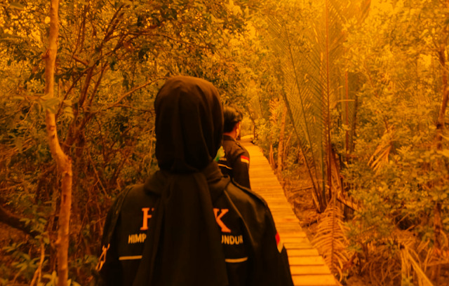

Beranda
Tentang HIMK
Artikel
Berita
Opini

Menyusuri Wisata Mangrove Mengkuse Saat Pandemi
Jom bace lagi
5 Hari Pengabdian di Mengkuse, Sawang Selatan
Jom bace lagi
Tanggul dan Pintu Air, Infrastruktur yang dibutuhkan Masyarakat Sungai Ungar Utara
Jom bace lagi
Kurangnya Pemberdayaan Potensi Desa Sawang Laut
Jom bace lagi
Air Bersih, Masalah Krusial Namun Penting Bagi Masyarakat Tanjung Sesup
Jom bace lagi
Peningkatan Komoditas Sektor Pertanian Perlu Campur Tangan Pemerintah Daerah
Jom bace lagi
Peran Pemerintah Dalam Membantu Mengelola Potensi Pertanian Masyarakat Lokal
Jom bace lagi
Administrasi Menjadi Penghalang Terwujudnya Keinginan Masyarakat Desa Sawang Laut
Jom bace lagi
Masalah Hutan Lindung, Menyelimuti Kehidupan Masyarakat Kelurahan Gading Sari, Tanjung Sesup
Jom bace lagi